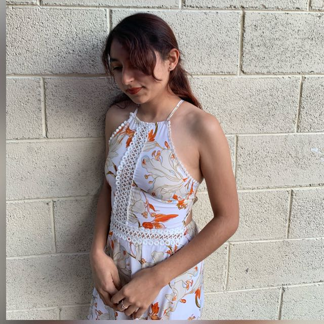

Un poco sobre mi ...

Mi nombre es Alejandra Estrella Baez, tengo 21 años y nací en el estado de Tlaxcala. En la actualidad me encuentro estudiando la licenciatura de Diseño Gráfico
en la Benemérita Universidad Autónoma de Puebla, en la cual hasta el momento he tenido un gran aprovechamiento de los conocimientos que se me han proporcionado. En
el ámbito escolar y laboral me considero una persona responsable, sé trabajar en equipo para llevar a cabo algún proyecto de manera exitosa.
Uno de mis pasatiempos favoritos son los deportes, en especial voleibol, pienso que soy una persona algo competitiva y me gusta ganar, igualmente si no sé algo trato de investigar y practicar hasta lograr la victoria. Me encanta tomar fotografías, creo que es una manera de congelar un momento especial para poder recordarlo, ya que no podemos regresar el tiempo, siempre podemos ver una foto y traer de vuelta los sentimientos que vivimos en esos momentos. Lo mismo con la ilustración, ya sea digital o manual, puedes crear cualquier cosa, momento o incluso la esencia de alguien.